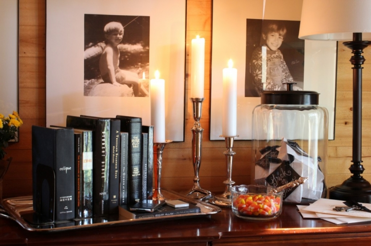
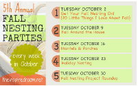

.png)
.PNG)
.PNG)
.PNG)
.PNG)
.PNG)
.JPG)
.JPG)
.PNG)
.PNG)


We don’t get a lot of trick-or-treaters here. Most of the children in our area attend a huge party at one of our local churches, but there are still a few ninjas, princesses, and butterfly dressed children who venture past our crazy dog to make it up to the door – usually relatives or students of mine. I put together little white sacks of candy, tagged them with “trick or treat” on black cardstock, tied them up with black ribbon, and displayed them in the big jar on the buffet. If for some reason we have a mad rush of little costumed critters, I have extra on hand for me them.
I’m not a fan of scary anything – not books, movies, or decorations. (Although I did love Barnabas and Angelique in the old Dark Shadows television show as a child.) The black books are about as “scary” as I get in my decorating. I prefer to keep things on the cheerful side of the holiday – like candy corn and flowers. It’s all about the candy anyway, isn’t it? 🙂
In the bedroom hallway, I added seasonal children’s books. Some of my favorites are Barn Dance by Bill Martin, Jr., (which was one of my oldest child’s favorites) The Stranger by Chris Van Allsburg, (gorgeous illustrations and interesting story – as all of his have) and a relatively new one, Crow Call by Lois Lowry. It is a sweet, sweet story about a daughter going hunting with her father, and the artwork in the book is worthy of framing. (The Van Allsburg book is the one open on top of the bench here.)
A throw on the ottoman in my bedroom is for warmth in the cool evenings (if I ever slow down enough to sit back there to read.)

Some mums were added to the little stool holding books by the chair. 
A little pumpkin that I painted with our khaki wall paint and some mums were added to the dresser in there. Last year Target carried a red and cream paper at Christmas that I loved. I bought up all that I could from every store in the area. I used some of the leftover paper to wrap the pot of mums because it goes so well with the drapery fabric in there.
And now for the real fun – the playroom. The end table got stocked with snacks: a jar of roasted peanuts, a bowl of caramel popcorn in clear bags tied with black and green ribbon, and one other jar filled with popcorn – all for enjoying Halloween movies (not the scary ones.) 🙂


On the little bookcase as you come in the door are the normal jars with game system controllers, but I did add a couple of painted pumpkins. I also replaced the photos that were on the chalkboard with ones taken of the children years ago in their Halloween costumes…from pumpkins to Pikachu and Buzz Lightyear to Harry Potter.

And finally, I again replaced the photos on our old dresser with shots of the children ready for trick-or-treating and added painted pumpkins.

The chalkboard above it that previously had sayings of games, now has the titles of Halloween movies we like. (I have to watch It’s the Great Pumpkin Charlie Brown, or it just doesn’t feel like the season.)
And that wraps up a some of “fall around our house” for now.
(There will be a little more for you hopefully later this week.)
Have you done much to your rooms to decorate for fall? We’d love to hear about it in the comments!
until next time…
I’m linking up with The Inspired Room for a holiday party.


.PNG)
Kelly – I am so glad I discovered your blog. I read my Kindergarteners Barn Dance and Ghost Eye Tree for the second time this week. I love both but Barn Dance is one of my absolute favorites. I’m also planning on reading Once When I was Scared this week by Helena Pittman but the same illustrator – Ted Rand (love comparing it to Ghost Eye Tree). I loved your posts about Maine – hope to get there soon. We were going this past summer but were so captivated by Quebec City that we never made it. We did drive by the inn used in the Newhard series in Vermont on the way back to Albany. Your home is beautiful, I look forward to reading more on your blog. Donna
————————————————————————
Donna – I am thrilled you discovered my blog too! Ghost Eye Tree is such a fun book to read aloud. I’ll have to look for the other Ted Rand book since I am not familiar with it. Quebec City must be beautiful, but I hope that one day you get to Maine (and I hope I get there to see it in the fall one day!) How neat that you saw the old inn from that tv series. I think the final episode of Newhart has to be THE best final episode from any series ever. Thank you for reading the blog and leaving your kind comments here. I hope to hear from you again in the future!
Kelly
I spend much time looking at posts about design concepts and also indulge in gardening ideas. I really do enjoy the simple touches most. The décor and style is one thing, but most of the style is born of the small things that are placed around. It reflects the personality of the home just as much as the major features like choice of furnishings and colour choices.
I see many like you that change things around seasonally, and it has to be said that this is what keeps a home fresh. You sure don’t need to keep decorating to add or even change the character of your home. This is why I appreciate blogs like yours.
I get the impression every month is different in your home and its often so simple, inexpensive and fun to keep your home fresh and ever changing, just by changing small things. This month it’s Halloween, soon Christmas no doubt, I’m sure that will be an interesting post, one to look forward too.
Then to finish I scroll down and find your Chili recipe. That finally won my heart, I love Chili. Nice read here, will be back to look again.
———————————————————————-
Jan – Your thoughtful comments were wonderful! Thank you for taking the time to read and leave your kind words. I agree, it is the little seasonal changes that keep a home fresh. I am also glad you liked the chili recipe. Please come back to visit again. I love getting comments from my readers!
Kelly
Hi Kelly! I started this message once and it disappeared so excuse me if it shows up twice.
I absolutely love everything you do. Your black and white pictures and those little Halloween treat bags are adorable! The way you approach Halloween in a cheerful way is the best. Really you are an amazing decorator!
Now about those children’s books…they are my faves! What teacher doesn’t love them? What grade do you teach? I taught 4th and 5th grade mild special education before we moved. In 4th grade we read The Stranger and then did an author study on Chris Van Allsburg. We also compared and contrasted all of his books, wrote new endings, etc. The kids loved it! Now about Bill Martin Jr….He lived the last few years of his life in Commerce, TX where I went to college. Many of his original manuscripts and books were donated to Texas A&M Commerce. Here’s a neat link about it if you are interested: http://billmartinjr.com/bill_martin
Thanks for your constant inspiration.
——————————————————————
Stacey – I teach 3rd grade. Chris Van Allsburg’s books are so great! (I guess that is why there have been movies made from them.) I will have to check out your link on Bill Martin, Jr. In December I am going to include a few more children’s books from my very favorite author (but I’m not telling who that is until then :)…might even do a giveaway for one of them.) Thank you so very much for your “amazing decorator” comment. Gave me a big smile!
Kelly
I love the way you used the silver candlesticks, silver trays, and books that reflect the season! Great pictures and inspiration!
———————————————————————-
Karon – I am a big fan of silver (although I am not a fan of polishing it!) Thank you for leaving your sweet comments here today! Glad you liked the post.
Kelly
I love those black books! So ominous and intriguing!
——————————————————————–
Sarah – That is about as “ominous and intriguing” as it gets around here!
Kelly
Kelly — I agree with Judy, such a nice surprise to open my e-mail and see your post. My husband is an engineer too and I can so relate to the idea of hanging things up yourself. Early on in our marriage I read an article (wish I could find it now) about how engineers need the level, stud finder, etc., to hang anything up and wives of engineers just grab a hammer and two seconds later it’s on the wall! Of course the article was written much more eloquently, but the same end result! Also, thank you for the link to Pottery Barn on seating for my “loft”. Love anything Pottery Barn! And, once again, your Fall touches around your home look so pretty!
———————————————————————
Genny – That is so true about engineers and their wives! I’m glad you could relate to it. What really drives my husband crazy is when I use the heel from my shoe as a hammer, or a knife from the kitchen as a screwdriver. 🙂 I’m happy you could use the link on the “loft” furniture. Thanks for your nice comments!
Kelly
Oh My goodness..so happy I found your site. I LOVE your style! Its so warm and inviting, yet rustic at the same time. Such a perfect balance! Just subscribed, can’t wait to see more. PS. I also own that Pottery Barn Photo book, LOVE IT! 🙂
———————————————————————-
Christina – You are mighty sweet! “Warm, inviting, and rustic.” Wow! I love that. Do you have all the PB decorating books? A good friend of mine got me most of them at a discount bookstore marked waaaaay down, and I purchased the rest of them from Amazon’s marketplace sellers. I still look at them frequently.
Thank you so much for finding the blog and leaving your nice comments here today.
Kelly
Kelly,
Your home looks great and ready for some serious fall fun. I really like the black bound books on the silver tray. I’m with you, no scary stuff at Halloween (or ever). I’m definitely a kindred spirit of yours, Charlie Brown is more my speed. LOL.
Great job, it’s all very pretty.
Karen
————————————————————————
Karen – Yep, no scary stuff here – didn’t even want the kids dressing as scary things when they were little. Oh my goodness, I just thought of something as I typed this. I can remember a night of trick-or-treating when I was a young child, and I got badly scared when some hooligan boys opened my car door as we were stopped at a light. They quickly closed it back, but I wonder if that is why I have such an aversion to “scary stuff?”…hmmm…never thought of that until now. (Self psychotherapy.:)) And yes, Charlie Brown is definitely my speed! Thanks for your nice compliment on the fall décor.
Kelly
I’ve put almost all of my Fall decor out this year. Some I have yet to put out, like the definitely themed Thanksgiving decor. But, I am always tweaking…love my Fall! Love your chalkboard!
———————————————————————-
Lisa – It sounds like you have made good progress on decorating for the season. Tweaking is the most fun, and I love fall too! (Although my heart really belongs to Christmas.) Thank you for your sweet words on the chalkboard.
Kelly
Your decor looks fabulous! I LOVE that last photo and the different fonts – looks amazing.
———————————————————————
Jocelyn – You are so sweet! I tried to mimic the fonts of the titles on the dvd’s, but didn’t quite nail it. At least it is close, and I am so glad you appreciated my efforts. 🙂 Thank you for dropping in and reading here.
Kelly
Your home is beautiful….I so truly loved all the beautiful fall and Halloween touches that you have so creatively done…I truly love your style…so sophisticated with an incredible sense of warmth and coziness….anyone would love to just curl up in any corner of your home with a great book, a cup of tea and maybe watch a episode of Dark Shadows…yes, I do remember that show!….
———————————————————————
Shirley – Yay another Dark Shadows person! Thank you so much for your sweet comments here. You don’t know how much appreciate all you sweet readers.
Kelly
I just found your blog and have enjoyed reading the posts. I am a fan!! I love, love your porch ideas and plan to copy some of them asap! Your photos are wonderful- you seem to be a woman of many talents!
———————————————————————
Debbie – I am so glad you found the blog! I haven’t been doing this very long. You copy all the ideas you want, and come back for more again later. 🙂 Thank you for your very nice compliments.
Kelly
Oh my, Kelly! You have outdone yourself! Thank you from the bottom of my heart for including those beautiful picture books. I wish we had been teaching in the same school (you one of the teachers, me the teacher-librarian). We would have had such fun sharing the best new picture books!
Your decorations are fabulous. I love them all but am ashamed to say that I have done nothing inside for autumn/fall/Halloween. Same old same old.
You are amazing! Thanks again for another spectacular posting.
Cath
———————————————————————-
Cath – Aren’t those books just so sweet? The artwork is always so amazing (and often unappreciated) in children’s books. We would have a great time sharing them! I am so happy everyone likes my little decorations. You folks don’t have Halloween right? But the beauty of fall is requiring you to put out a mum or pumpkin! Orders for the day. Ha ha. Thank you for your ever kind words here.
Kelly
Love your blog! Love your fall decorations!! Thank you for all the great decorating ideas!!!
——————————————————————–
Vickie – You are so sweet! Thank you for the encouraging words since I have only being doing this for about 6 months. I am so glad you like it all!
Kelly
I love your style ~ everything looks amazing! It’s the Great Pumpkin Charlie Brown is our family favorite this time of year. Happy Fall!
———————————————————————-
Paula – I am so glad you liked it all. I love love love Charlie Brown! And Christmas has to include A Charlie Brown Christmas and the music too, right?!
Kelly
let me first start by saying what a wonderful treat this was to open up my e-mail this monday evening and see your post! (waiting on the debates….enough said)!
secondly, you MUST give a tutorial on how you hung your gallery of pictures in the foyer so precisely…okay? (LOL)!
and last but certainly not least, i love, love, love ALL your fall/halloween decorations…i can certainly tell you are a teacher with all your special touches! i am going to shamelessly steal some of your ideas for next year!
now i’m going back and pin some of your photos…thank you so much for sharing Kelly!
———————————————————————
Judy – I had hoped to get this post out sooner, but I have been sick with a stomach bug and only able to work on it a little bit at a time and then go lie down. Glad that it made you happy for the evening! A tutorial on hanging pictures? My husband laughed at that one! First, there are horizontal boards in the foyer to help with that, and second I am the QUEEN of nail holes in the wall. My engineer husband could write out mathematical formulas, but I never wait on him. Nope, just eyeball those babies, and move them if they are not right. Thanks for loving all the fall decorations. You just go ahead and steal all you want and pin all you can.
Kelly
I loved Dark Shadows when I was a child. My mother would not let us watch it as she deemed it too scary but at my grandmother’s house, we settled down and watched it together!! A great childhood memory. Love your little white pumpkins with Boo etc on them. I may have to appropriate than idea!!!
———————————————————————-
Arlene – I was wondering if anyone besides me remembered Dark Shadows. That is so funny about your grandmother letting you all watch it! Happy you could use the pumpkin idea. They were super easy to do with a chalk pen.
Kelly
So cute. Sadly with the remodel I havent done much at all except go through the Halloween deco box with my daughter who is decorating her first apartment. ( she has a blog you might enjoy at http://www.twhentysomething.wordpress.com) It warmed my heart to hear her looking for specific items that she remembered as a child. And like, you, I also pull out old photos of the kids in their costumes and display them. We have a construction paper pumpkin chain that the kids added to each year and it is so fun to look at and see how their writing and their drawing improved (?) over the years. I look forward to hanging that next year and maybe adding one from my little 3 year old grandson to continue the tradition. Thanks for sharing your family holiday with all of us and, btw, love love that gingham bench with the red welting!
————————————————————————
Diane – I will have to check out your daughter’s blog. Your construction paper pumpkin chain is such a great idea!! How wonderful to be able to continue traditions even on to younger generations. So glad you like the little bench! It has floated around this house to so many places. It started in the playroom, moved to my daughter’s room, and I think it is parked in the best place for it here in the hall now.
Kelly
I love the details! Thanks for sharing. 🙂
————————————————————————
Linda – So glad you liked the ideas. Thank you for visiting the blog today!
Kelly